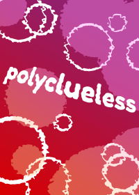

Stories
Completed
Polyclueless
Stephen was a very uncomfortable and anxious boy riddled with insecurities and fears. He was also best friends with a lesbian couple, and, strangely, they seemed to care about him, which was weird. What was the point of caring about someone with no redeeming qualities?
Regardless, they did, and they decided to take him along with them into VR for their summer vacation. He felt so out of place when he spent time with them, so... wrong, but... VR is a chance to be someone else. A chance to escape from the reality of the body you’re stuck in outside.
Stephen would take full advantage of that opportunity, and maybe, just maybe... he wouldn’t be quite so out of place after all.

It Happened at Osier High
Osier High had many rules, but none of which affected Warner quite as much as the rule that students could not be in relationships with members of the other sex. That wouldn’t stop him, though — he needed a girlfriend, even if he wasn’t entirely sure why. And, heck, rules were meant to be broken. He could handle any punishment, if it came.
...Right?

Something's... Witchy
A Very Girly Sleepover to Which I Was Not Invited
Ongoing
The Once-Prince and the Wildling
Prince August of Adapiel did not like being a prince. In fact, he hated it along with nearly every single 'privilege' it gave him.
But then, a surprise delegation from a country at odds with Adapiel — one with a vastly different culture, and strange magicks, too...
Two stars meet, one red, one blue — the colour produced is purple in hue.
'Twas a night of fated encounters.
Hiatus

The Yin Physique
Stumbling upon an inheritance could grant you many amazing things — tips on cultivating essences, mastery of cultivation paths, vi plants, vi formulas, combo moves, and so much more. Finding one is like being blessed by an ancestor, taking their strength for your own and gaining a powerful leap forwards in your cultivation!
I've stumbled upon many an inheritance in my time, but none more valuable than the inheritances of a woman named Star Rain, cultivator of the mysterious "yin path". In each inheritance, this powerful woman recorded her autobiography — the steps she took, the experiences she went through... I've dedicated my life to piecing together the life of Star Rain, and this is what I've found.

Snowbound
Snowbound is a story about two roommates being trapped. Trapped by life, by society... by their situations they feel powerless to change.
VR should be an escape, but can it still be, when you're snowbound? Instead, confined to a small space, and with a bit of chemistry or magic, the two could form a bond tighter than they ever would have thought was possible.